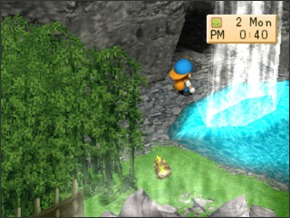
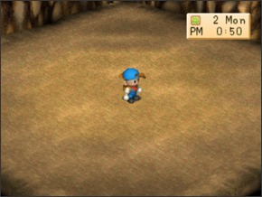
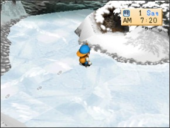

MINERAÇÃO    Há duas minas em Harvest Moon: Back to Nature. A mina da cachoeira está aberta todo ano e você pode achar os minérios que precisa para dar um upgrade nas suas ferramentas. A outra mina está aberta apenas durante o inverno neste videogame quando o lago da montanha congela mais e você pode achar muitos outros minérios raros que podem ser vendidos por mais e podem ser usados para fazerem coisas como joalheria ou máquinas produtoras. Se você comprar a cesta do supermercado você sera capaz de levar ela para mina e permitirá você a coletar muito mais minério em uma única ida a mina. Ambas as minas tem dez andares. O truque para achar a escada para o próximo andar é cavar ao redor da área do lado oposto da sala. Por exemplo se a escada de cima está no canto inferior esquerdo da sala, cave no canto superior direito para achar a escada para o próximo andar. A escada também nunca estará em nenhum dos quadrados do perímetro da sala então não se encomode de cavar lá. Cave ao menos um quadrado do perímetro para achar a escada. Neste videogame você também achará uma lagoa no andar de baixo da mina de inverno onde você pode capturar o Peixe Rei(King Fish). Com ambas as minas você vai cavar melhor itens o mais profundo que você for. Você também pode cavar sacolas de 10G, especialmente na mina da cachoeira, e você cavará aleatóriamente uma Power Berries nas duas minas. MINA DA CACHOEIRA Minério(Ore) Preço de venda Minério de lixo(Junk ore) 1G Minério de cobre(Copper ore) 15G Minério de prata(Silver ore) 20G Minério de ouro(Gold ore) 25G Minério de Mystrile(Mystrile ore) 40G MINA DE INVERNO Minério(Ore) Preço de venda Minério de lixo(Junk ore) 1G Minério de Mystrile(Mystrile ore) 40G Minério de Admantite(Admantite ore) 50G Orichalc 50G Olá! Bem-Vindo!